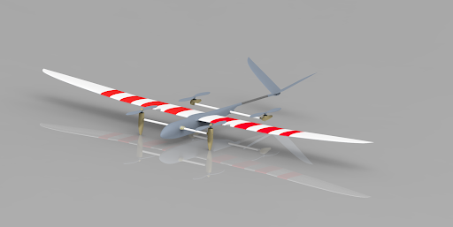
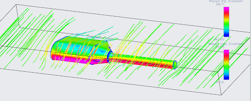

Complete mechanical design of a VTOL (Vertical Take-Off and Landing) drone, with a strong focus on aerodynamics, CAD modeling and system integration.

This project involved the complete mechanical design of a VTOL drone, from early concept to detailed CAD models. Emphasis was placed on aerodynamic efficiency, modularity and system-level integration.
Carried out using professional engineering tools and simulation environments, combining structural analysis with kinematic modeling to validate the design before prototyping.
The nacelle was designed to balance aerodynamic performance, structural robustness and ease of integration. Several design iterations were evaluated through simulations and CAD refinements, leading to an optimized geometry that minimizes drag while ensuring reliable motor mounting.
